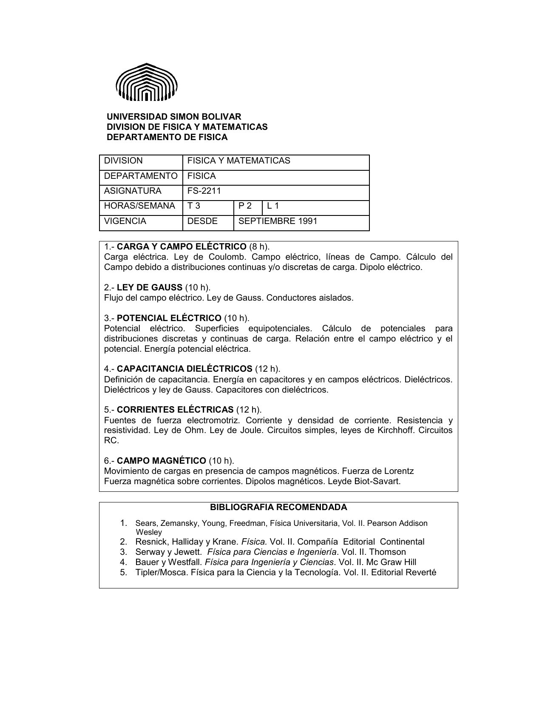

Introducción
Esta página contiene información relevante para el curso de Física III (FS-2211) de la USB correspondiente al período Enero-Abril 2023.
Comunicaciones
- ...
Curriculum
Curriculum Prof. Jacinto Liendo --> Link
Programa
- Programa del curso (PDF) --> Link
Cronograma
Cronograma de videos y clases presenciales de Física 3 (incluye secciones del libro de texto relevantes).
Contenido del curso
- Lista de reproducción de YouTube con clases grabadas de Física III por el Prof. Jacinto Liendo --> https://www.youtube.com/playlist?list=PLD6548CFB93E0DA08
- Documento explicando el contenido de cada uno de los videos de la lista de reproducción de YouTube y de las clases presenciales que se impartirán. Incluye preguntas, ejercicios y problemas sugeridos para realizar por cada clase del libro usado en este curso --> Link
Libros
Los libros usados en este curso son:
- Física Universitaria Volumen II, 11va Edición - Sears
- Solucionario Fisica Universitaria Volumen 2 Sears 11 ed
Links directos a cada PDF:
- Física Universitaria Volumen II, 11va Edición --> Link
- Solucionario Física Universitaria Volumen II, 11va Edición --> Link